Este trabalho tem como objetivo aplicar tecnicas de clustering a um dataset real da area da saude, com foco no tema diabetes. A proposta consiste em identificar perfis de individuos com caracteristicas semelhantes de saude, estilo de vida e demografia, de modo a observar padroes latentes sem usar o rotulo clinico durante o treinamento dos algoritmos.
O dataset utilizado foi o CDC Diabetes Health Indicators, derivado do Behavioral Risk Factor Surveillance System (BRFSS) 2015 do CDC. A base analisada contem 253680 instancias e 22 variaveis no arquivo original, sendo 21 variaveis de entrada usadas na clusterizacao.
As variaveis representam indicadores de saude, comportamento, acesso a servicos e aspectos demograficos, incluindo HighBP (indicador de pressao arterial elevada), HighChol (indicador de colesterol elevado), CholCheck (realizacao de exame de colesterol), BMI (indice de massa corporal), Smoker (historico de tabagismo), Stroke (historico de AVC), HeartDiseaseorAttack (historico de doenca cardiaca ou infarto), PhysActivity (pratica de atividade fisica), Fruits (consumo de frutas), Veggies (consumo de vegetais), HvyAlcoholConsump (consumo excessivo de alcool), AnyHealthcare (acesso a qualquer cobertura de saude), NoDocbcCost (dificuldade de consulta por custo), GenHlth (autoavaliacao da saude geral), MentHlth (dias com pior saude mental), PhysHlth (dias com pior saude fisica), DiffWalk (dificuldade para caminhar), Sex (sexo), Age (faixa etaria), Education (escolaridade), Income (renda). O campo Diabetes_binary corresponde ao rotulo original do problema e foi removido antes da clusterizacao, sendo readicionado apenas depois para interpretacao dos grupos encontrados.
O problema investigado neste trabalho consiste em verificar se individuos podem ser agrupados em perfis distintos de saude e risco associados ao diabetes, com base em indicadores como BMI, pressao alta, colesterol alto, idade, saude geral, atividade fisica, renda e escolaridade.
Apos a clusterizacao, o rotulo original Diabetes_binary foi utilizado apenas para interpretar os clusters e nunca como entrada nos algoritmos nem como criterio principal de selecao dos modelos.
Na analise univariada foram calculadas estatisticas descritivas como media, mediana, desvio padrao, quartis e valores extremos para todas as variaveis numericas. A Tabela a seguir apresenta um recorte dessas estatisticas:
| variable | mean | median | std | min | q1 | q2 | q3 | max |
|---|---|---|---|---|---|---|---|---|
| HighBP | 0.4290 | 0.0000 | 0.4949 | 0.0000 | 0.0000 | 0.0000 | 1.0000 | 1.0000 |
| HighChol | 0.4241 | 0.0000 | 0.4942 | 0.0000 | 0.0000 | 0.0000 | 1.0000 | 1.0000 |
| CholCheck | 0.9627 | 1.0000 | 0.1896 | 0.0000 | 1.0000 | 1.0000 | 1.0000 | 1.0000 |
| BMI | 28.3824 | 27.0000 | 6.6087 | 12.0000 | 24.0000 | 27.0000 | 31.0000 | 98.0000 |
| Smoker | 0.4432 | 0.0000 | 0.4968 | 0.0000 | 0.0000 | 0.0000 | 1.0000 | 1.0000 |
| Stroke | 0.0406 | 0.0000 | 0.1973 | 0.0000 | 0.0000 | 0.0000 | 0.0000 | 1.0000 |
| HeartDiseaseorAttack | 0.0942 | 0.0000 | 0.2921 | 0.0000 | 0.0000 | 0.0000 | 0.0000 | 1.0000 |
| PhysActivity | 0.7565 | 1.0000 | 0.4292 | 0.0000 | 1.0000 | 1.0000 | 1.0000 | 1.0000 |
| Fruits | 0.6343 | 1.0000 | 0.4816 | 0.0000 | 0.0000 | 1.0000 | 1.0000 | 1.0000 |
| Veggies | 0.8114 | 1.0000 | 0.3912 | 0.0000 | 1.0000 | 1.0000 | 1.0000 | 1.0000 |
Os graficos abaixo ilustram distribuicoes relevantes para o relatorio:
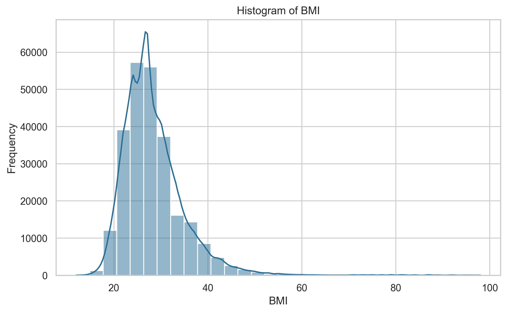
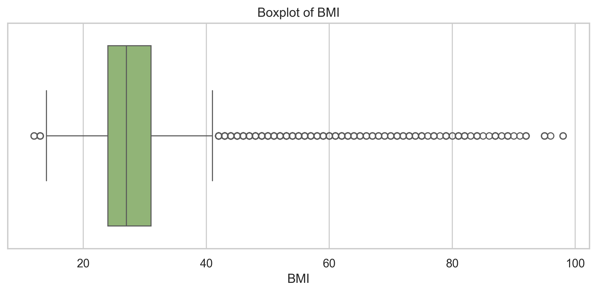
Na analise bivariada foram calculadas correlacoes de Pearson e Spearman. As correlacoes absolutas mais fortes observadas foram:
Top correlacoes de Pearson
| variable_1 | variable_2 | correlation |
|---|---|---|
| GenHlth | PhysHlth | 0.5244 |
| PhysHlth | DiffWalk | 0.4784 |
| GenHlth | DiffWalk | 0.4569 |
| Education | Income | 0.4491 |
| GenHlth | Income | -0.3700 |
Top correlacoes de Spearman
| variable_1 | variable_2 | correlation |
|---|---|---|
| Education | Income | 0.4520 |
| GenHlth | PhysHlth | 0.4518 |
| GenHlth | DiffWalk | 0.4228 |
| PhysHlth | DiffWalk | 0.4150 |
| GenHlth | Income | -0.3543 |
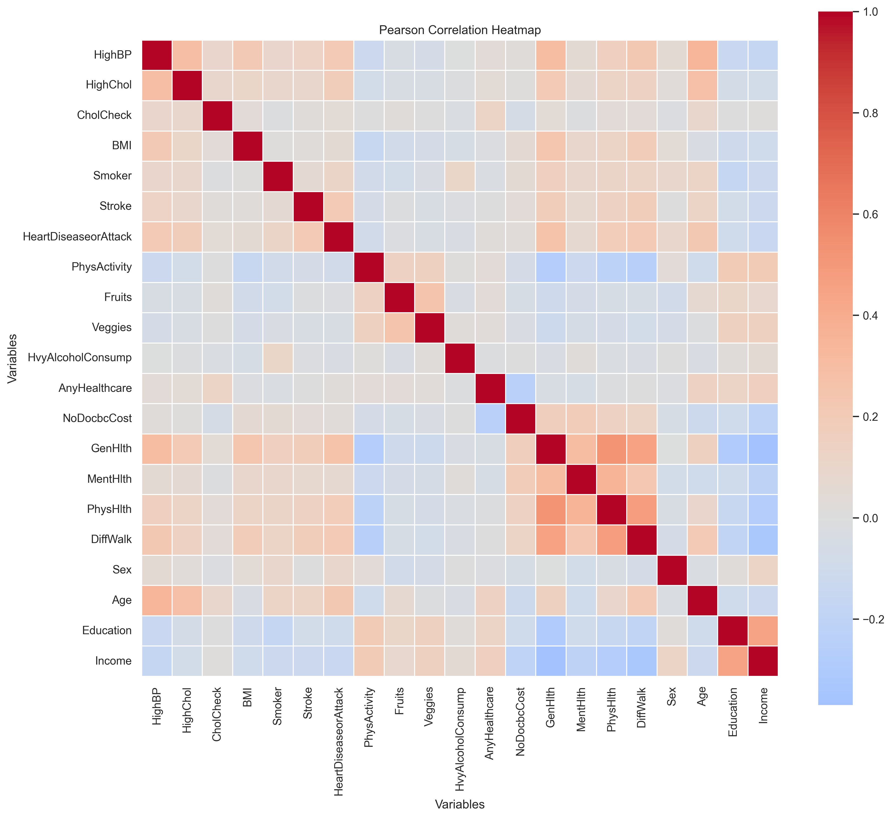
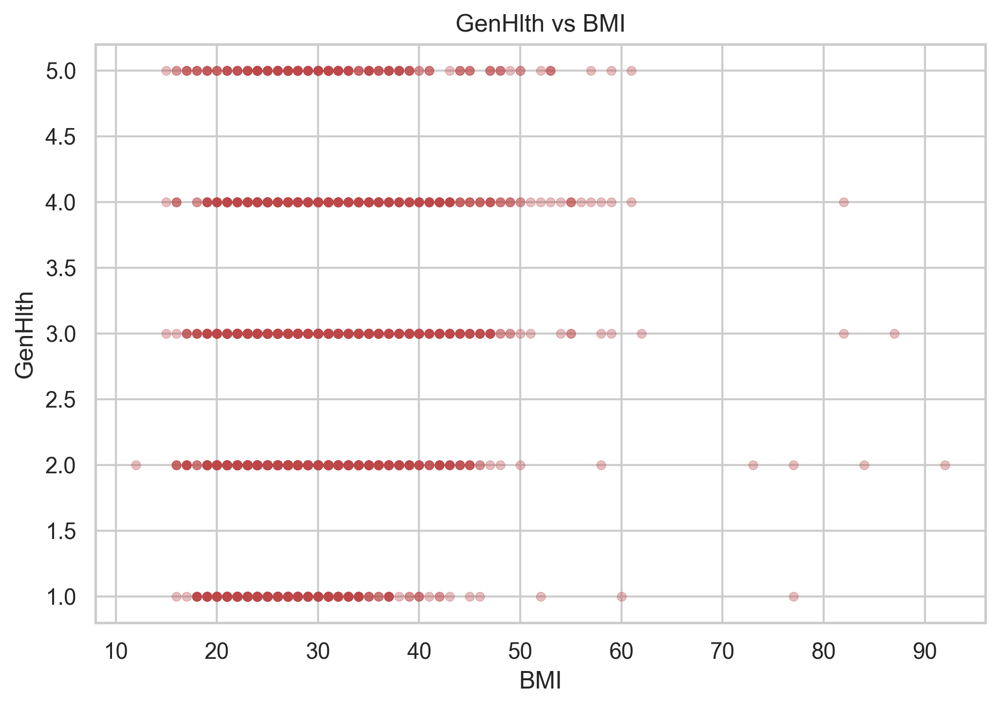
Na analise multivariada foi aplicado PCA com dois componentes apenas para visualizacao exploratoria. A variancia explicada acumulada pelos dois primeiros componentes foi de 0.2511, o que indica que a projecao em 2D deve ser interpretada como apoio visual e nao como representacao completa da estrutura dos dados.
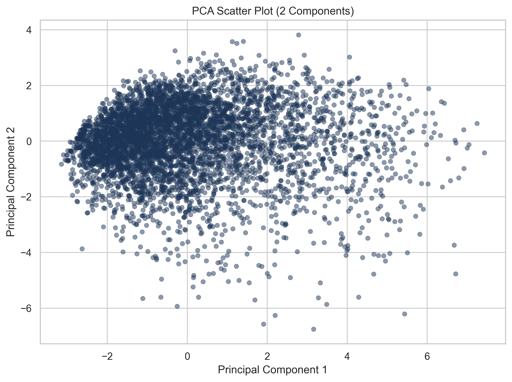
O pre-processamento foi executado apenas sobre as variaveis de entrada. Nao foram identificadas colunas de identificacao, nomes ou datas a serem removidas. Tambem nao foram observados valores faltantes no CSV utilizado, de modo que nao foi necessario imputar medias, medianas ou modas.
Mesmo sem faltantes, foram detectados 343041 valores potencialmente discrepantes pelo criterio do intervalo interquartil (IQR). Em vez de remover instancias, foi aplicado clipping nos limites inferior e superior de cada variavel numerica. Na etapa final, as variaveis foram padronizadas com StandardScaler para adequar a escala aos algoritmos baseados em distancia. O PCA foi usado apenas para visualizacao e nao como base principal de clusterizacao.
Foram executados tres algoritmos de clustering, todos sem utilizar o rotulo Diabetes_binary:
k de 2 a 10, com random_state fixo e n_init = 10.n_clusters de 2 a 10 com os linkages ward, complete, average e single.eps em [0.5, 0.8, 1.0, 1.5, 2.0, 2.5, 3.0] e min_samples em [5, 10, 20, 50].Como o dataset possui mais de 250 mil registros, foi utilizada amostragem reprodutivel em algoritmos mais custosos. No experimento final, K-Means trabalhou com 20.000 instancias, Agglomerative com 10.000 instancias estratificadas pelo rotulo apenas para tornar a amostra representativa, e DBSCAN com 10.000 instancias aleatorias. Em nenhum caso o rotulo foi usado no treinamento.
A comparacao dos algoritmos foi feita com metricas internas de clustering: Silhouette Score, Davies-Bouldin Index e Calinski-Harabasz Score. O Silhouette Score mede coesao e separacao entre grupos, sendo melhor quanto maior. O Davies-Bouldin Index mede sobreposicao entre clusters, sendo melhor quanto menor. O Calinski-Harabasz Score compara dispersao entre clusters e dispersao interna, sendo melhor quanto maior.
Essas metricas sao internas e nao usam o rotulo Diabetes_binary, o que esta alinhado com a natureza nao supervisionada do problema.
A Tabela seguinte resume a melhor configuracao de cada algoritmo:
| algorithm | k | inertia | n_clusters_found | silhouette_score | davies_bouldin_index | calinski_harabasz_score | used_sampling | sampling_strategy | original_size | sample_size | linkage | n_clusters | configuration | eps | min_samples | n_noise_points | noise_percentage |
|---|---|---|---|---|---|---|---|---|---|---|---|---|---|---|---|---|---|
| kmeans | 2.0000 | 203618.1875 | 2 | 0.1563 | 2.3314 | 3545.9118 | True | random | 253680 | 20000 | nan | nan | nan | nan | nan | nan | nan |
| agglomerative | nan | nan | 2 | 0.2119 | 0.6599 | 2.2271 | True | stratified | 253680 | 10000 | single | 2.0000 | single_k_2 | nan | nan | nan | nan |
| dbscan | nan | nan | 3 | 0.4194 | 0.8219 | 179.7665 | True | random | 253680 | 10000 | nan | nan | eps_0.5_min_samples_20 | 0.5000 | 20.0000 | 9825.0000 | 98.2500 |
Os resultados completos por algoritmo foram salvos em CSV e seus principais trechos sao apresentados a seguir.
K-Means
| algorithm | k | inertia | n_clusters_found | silhouette_score | davies_bouldin_index | calinski_harabasz_score | used_sampling | sampling_strategy | original_size | sample_size |
|---|---|---|---|---|---|---|---|---|---|---|
| kmeans | 2 | 203618.1875 | 2 | 0.1563 | 2.3314 | 3545.9118 | True | random | 253680 | 20000 |
| kmeans | 3 | 186273.1196 | 3 | 0.1223 | 2.3876 | 2868.9767 | True | random | 253680 | 20000 |
| kmeans | 4 | 176139.6000 | 4 | 0.1016 | 2.4230 | 2406.0515 | True | random | 253680 | 20000 |
| kmeans | 5 | 168650.5330 | 5 | 0.1045 | 2.4047 | 2106.5484 | True | random | 253680 | 20000 |
| kmeans | 6 | 161607.2737 | 6 | 0.0985 | 2.2883 | 1932.8839 | True | random | 253680 | 20000 |
| kmeans | 7 | 156291.4219 | 7 | 0.0931 | 2.2166 | 1778.7676 | True | random | 253680 | 20000 |
| kmeans | 8 | 151758.6319 | 8 | 0.1005 | 2.3233 | 1655.4240 | True | random | 253680 | 20000 |
| kmeans | 9 | 147503.9220 | 9 | 0.1003 | 2.2616 | 1562.2797 | True | random | 253680 | 20000 |
| kmeans | 10 | 143797.0302 | 10 | 0.0957 | 2.2222 | 1481.6787 | True | random | 253680 | 20000 |
Agglomerative Clustering
| algorithm | linkage | n_clusters | configuration | n_clusters_found | silhouette_score | davies_bouldin_index | calinski_harabasz_score | used_sampling | sampling_strategy | original_size | sample_size |
|---|---|---|---|---|---|---|---|---|---|---|---|
| agglomerative | single | 2 | single_k_2 | 2 | 0.2119 | 0.6599 | 2.2271 | True | stratified | 253680 | 10000 |
| agglomerative | average | 2 | average_k_2 | 2 | 0.1815 | 1.9640 | 935.0690 | True | stratified | 253680 | 10000 |
| agglomerative | ward | 2 | ward_k_2 | 2 | 0.1603 | 2.3379 | 1243.3177 | True | stratified | 253680 | 10000 |
| agglomerative | complete | 2 | complete_k_2 | 2 | 0.1462 | 2.4123 | 637.2830 | True | stratified | 253680 | 10000 |
| agglomerative | single | 3 | single_k_3 | 3 | 0.1435 | 0.6752 | 2.1534 | True | stratified | 253680 | 10000 |
| agglomerative | average | 3 | average_k_3 | 3 | 0.1367 | 2.5095 | 598.1453 | True | stratified | 253680 | 10000 |
| agglomerative | single | 4 | single_k_4 | 4 | 0.1359 | 0.7648 | 3.0515 | True | stratified | 253680 | 10000 |
| agglomerative | average | 4 | average_k_4 | 4 | 0.1196 | 2.3129 | 404.2894 | True | stratified | 253680 | 10000 |
| agglomerative | complete | 3 | complete_k_3 | 3 | 0.1174 | 2.4271 | 374.8943 | True | stratified | 253680 | 10000 |
| agglomerative | single | 5 | single_k_5 | 5 | 0.1008 | 0.7510 | 2.7897 | True | stratified | 253680 | 10000 |
DBSCAN
| algorithm | eps | min_samples | configuration | n_clusters_found | n_noise_points | noise_percentage | silhouette_score | davies_bouldin_index | calinski_harabasz_score | used_sampling | sampling_strategy | original_size | sample_size |
|---|---|---|---|---|---|---|---|---|---|---|---|---|---|
| dbscan | 0.5000 | 20 | eps_0.5_min_samples_20 | 3 | 9825 | 98.2500 | 0.4194 | 0.8219 | 179.7665 | True | random | 253680 | 10000 |
| dbscan | 1.0000 | 50 | eps_1.0_min_samples_50 | 2 | 9431 | 94.3100 | 0.4018 | 1.0691 | 382.9310 | True | random | 253680 | 10000 |
| dbscan | 0.8000 | 50 | eps_0.8_min_samples_50 | 3 | 9738 | 97.3800 | 0.3731 | 1.0131 | 189.7079 | True | random | 253680 | 10000 |
| dbscan | 0.5000 | 10 | eps_0.5_min_samples_10 | 8 | 9574 | 95.7400 | 0.3216 | 1.0722 | 145.3742 | True | random | 253680 | 10000 |
| dbscan | 0.5000 | 5 | eps_0.5_min_samples_5 | 48 | 9150 | 91.5000 | 0.2961 | 0.8272 | 106.8755 | True | random | 253680 | 10000 |
| dbscan | 1.0000 | 20 | eps_1.0_min_samples_20 | 11 | 8898 | 88.9800 | 0.2850 | 1.1181 | 248.1300 | True | random | 253680 | 10000 |
| dbscan | 1.5000 | 50 | eps_1.5_min_samples_50 | 16 | 6842 | 68.4200 | 0.2665 | 1.3971 | 378.9390 | True | random | 253680 | 10000 |
| dbscan | 0.8000 | 20 | eps_0.8_min_samples_20 | 6 | 9388 | 93.8800 | 0.2602 | 1.4873 | 182.0994 | True | random | 253680 | 10000 |
| dbscan | 0.8000 | 10 | eps_0.8_min_samples_10 | 40 | 8664 | 86.6400 | 0.2580 | 1.1896 | 149.5925 | True | random | 253680 | 10000 |
| dbscan | 1.5000 | 20 | eps_1.5_min_samples_20 | 31 | 4654 | 46.5400 | 0.2112 | 1.5568 | 300.0075 | True | random | 253680 | 10000 |
As figuras de comparacao entre algoritmos sao apresentadas abaixo:
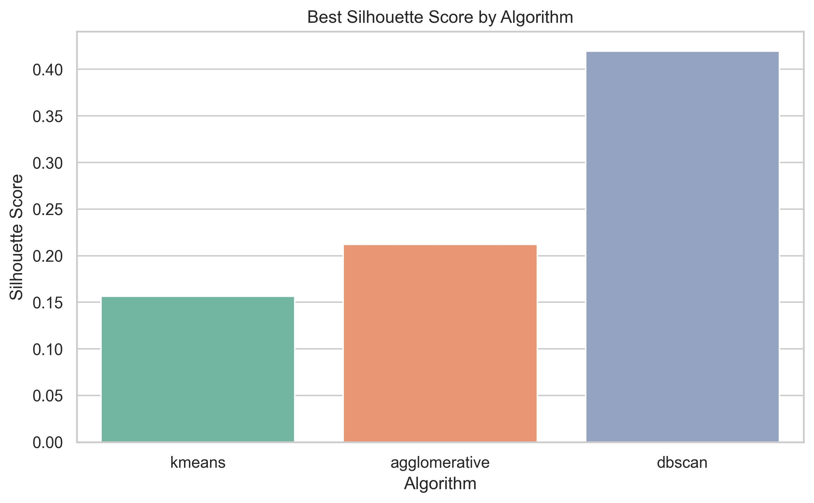
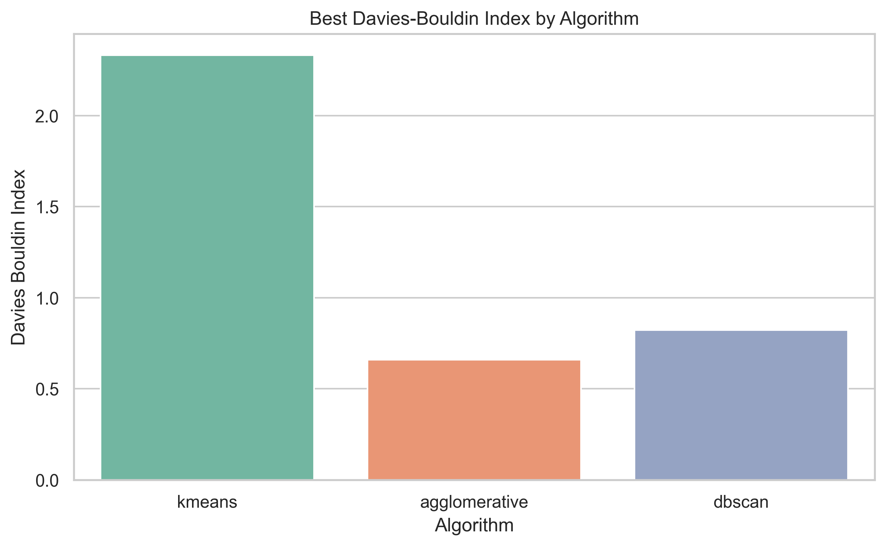
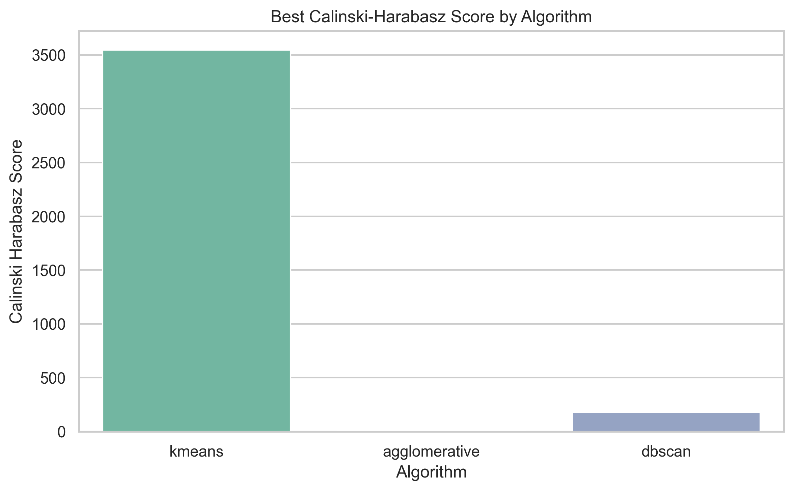
Pelo criterio principal adotado, o melhor algoritmo foi dbscan, com Silhouette Score de 0.4194.
A tabela de contingencia do melhor K-Means frente ao rotulo original foi:
| cluster | 0.0 | 1.0 |
|---|---|---|
| 0 | 5962 | 2156 |
| 1 | 11286 | 596 |
A tabela percentual correspondente foi:
| cluster | 0.0 | 1.0 |
|---|---|---|
| 0 | 73.4417 | 26.5583 |
| 1 | 94.9840 | 5.0160 |
Para Agglomerative Clustering:
| cluster | 0.0 | 1.0 |
|---|---|---|
| 0 | 8606 | 1393 |
| 1 | 1 | 0 |
| cluster | 0.0 | 1.0 |
|---|---|---|
| 0 | 86.0686 | 13.9314 |
| 1 | 100.0000 | 0.0000 |
Para DBSCAN:
| cluster | 0.0 | 1.0 |
|---|---|---|
| -1 | 8465 | 1360 |
| 0 | 118 | 0 |
| 1 | 37 | 0 |
| 2 | 20 | 0 |
| cluster | 0.0 | 1.0 |
|---|---|---|
| -1 | 86.1578 | 13.8422 |
| 0 | 100.0000 | 0.0000 |
| 1 | 100.0000 | 0.0000 |
| 2 | 100.0000 | 0.0000 |
No melhor K-Means, o cluster com maior proporcao de individuos com diabetes foi o cluster 0.0, com 26.56% de casos positivos.
Esse cluster apresentou
No melhor Agglomerative, o cluster com maior proporcao de diabetes foi 0.0, com 13.93%.
No melhor DBSCAN, a maior proporcao de diabetes apareceu em -1.0, com 13.84%.
Os perfis medios reforcam a relevancia de variaveis como BMI, HighBP, HighChol, GenHlth, Age, Income e Education. No K-Means, o cluster de maior risco mostrou maior BMI medio, maior prevalencia de pressao alta e colesterol alto, pior saude geral, maior idade media e menor renda media, o que e coerente com um perfil de vulnerabilidade cardiometabolica.
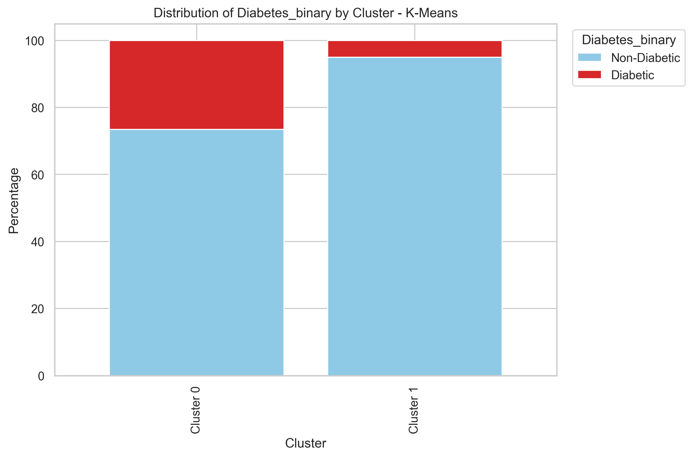
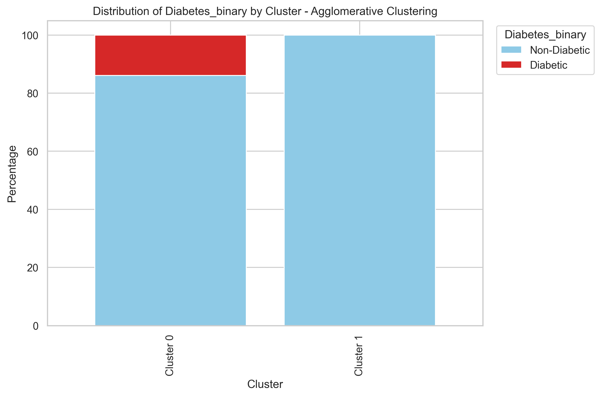
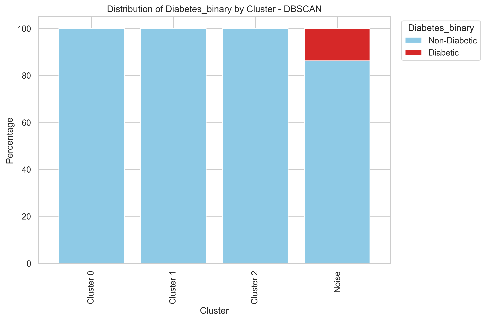
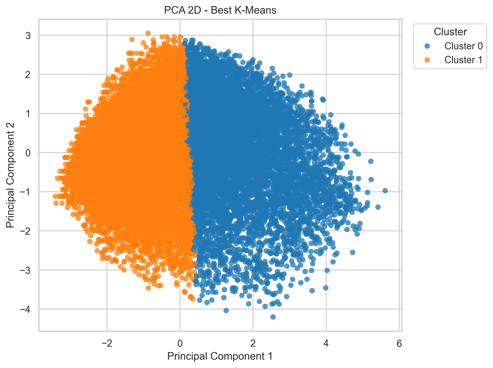
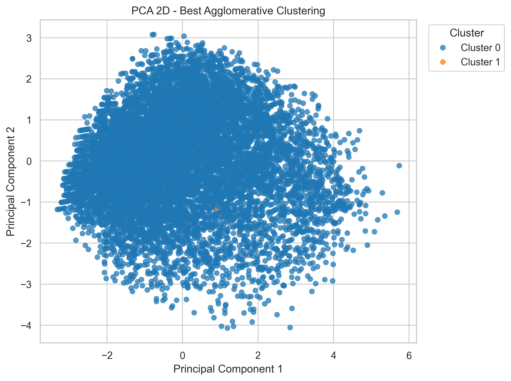
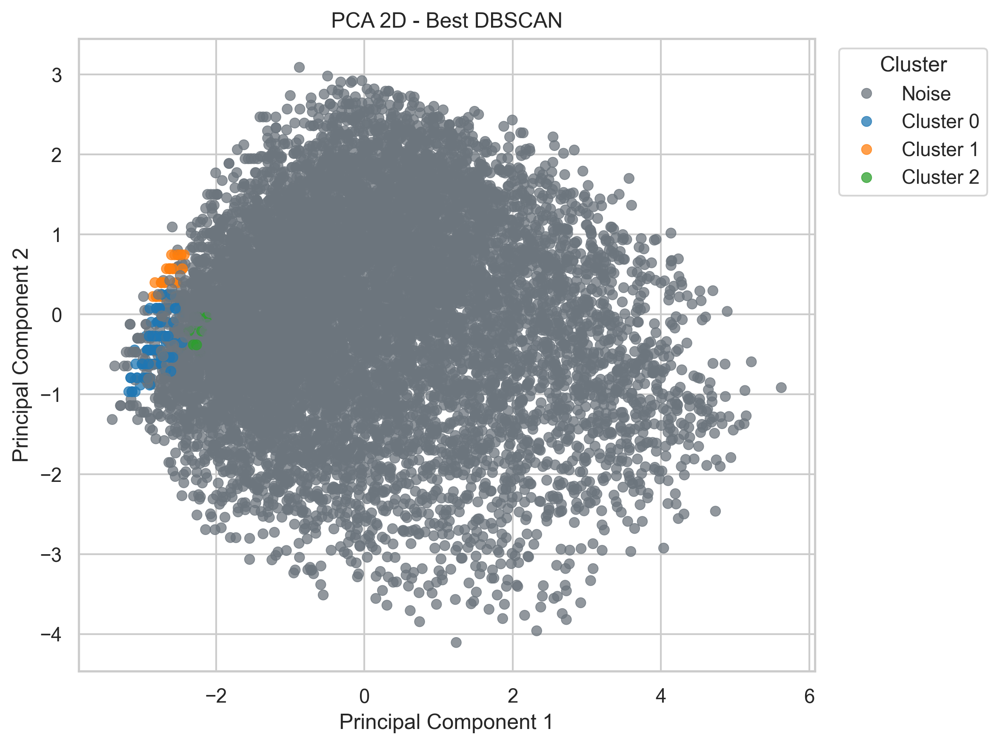
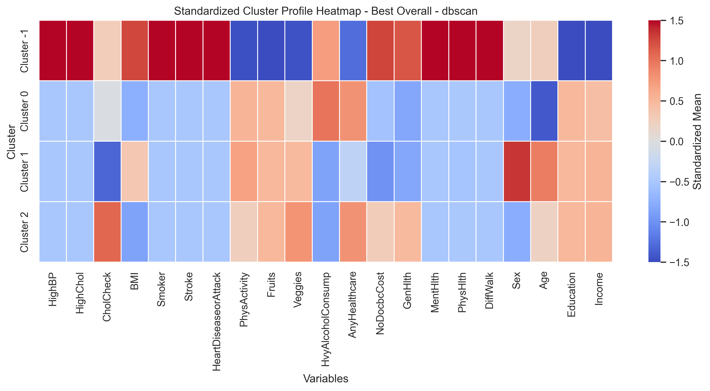
Os algoritmos apresentaram comportamentos distintos. O K-Means produziu uma segmentacao simples e interpretavel, destacando dois perfis relativamente contrastantes. O Agglomerative Clustering obteve resultado um pouco melhor em Silhouette do que o K-Means, mas a melhor configuracao encontrada por single linkage gerou um cluster muito pequeno, o que limita sua utilidade pratica. O DBSCAN obteve o melhor Silhouette Score geral, mas isso ocorreu ao custo de classificar 98.25% das instancias da amostra como ruido quando o melhor algoritmo geral foi DBSCAN, o que reduz fortemente a interpretabilidade e a cobertura da solucao. Entre as principais limitacoes do estudo, destacam-se: (1) o DBSCAN tende a perder poder discriminativo em alta dimensionalidade; (2) metricas internas nem sempre correspondem ao rotulo clinico real; (3) o BRFSS e um survey baseado em autorrelato, sujeito a vieses de memoria e declaracao.
O melhor algoritmo segundo o criterio principal adotado foi dbscan. Ainda assim, a interpretacao substantiva sugere que a qualidade de um clustering em saude nao deve ser avaliada apenas por uma metrica interna isolada, mas tambem por estabilidade, cobertura e capacidade de produzir perfis clinicamente plausiveis.
Os resultados indicaram a existencia de perfis com maior risco cardiometabolico, caracterizados por maior BMI, maior frequencia de pressao alta e colesterol alto, pior saude geral, idade mais avancada e menor renda. Em todo o processo, o rotulo Diabetes_binary foi mantido fora da clusterizacao e utilizado apenas posteriormente para interpretacao dos grupos.